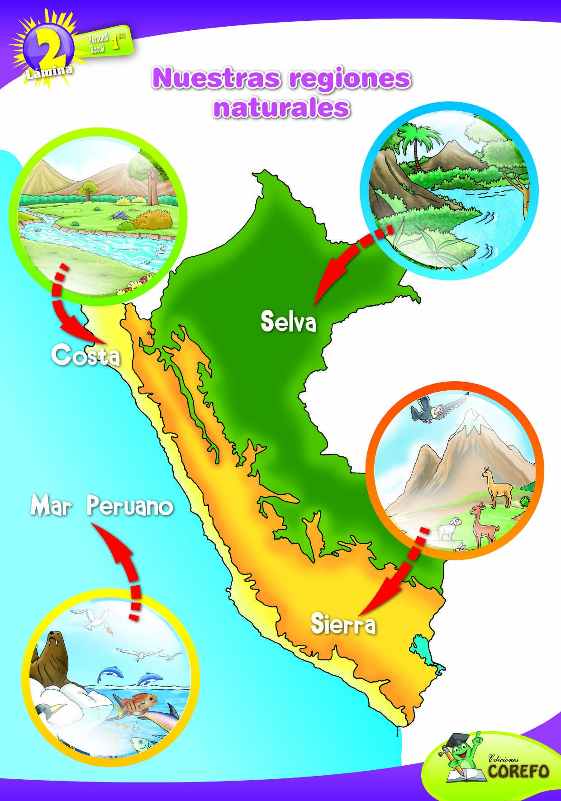

Contamos con planificación de rutas para atender operaciones comerciales, industriales y empresariales.

Cobertura desde Lima hacia principales ciudades comerciales y centros industriales.
Ciudades: Lima, Trujillo, Chiclayo, Arequipa.
Rutas planificadas para zonas industriales y comerciales de altura.
Ciudades: Cusco, Huancayo, Ayacucho.
Distribución logística hacia regiones amazónicas con planificación especializada.
Ciudades: Iquitos, Tarapoto, Pucallpa.
Entregas Lima Metropolitana
Regiones atendidas
Unidades operativas
Seguridad logística
Nuestro equipo prepara la ruta adecuada para tu operación.
Solicitar Cotización